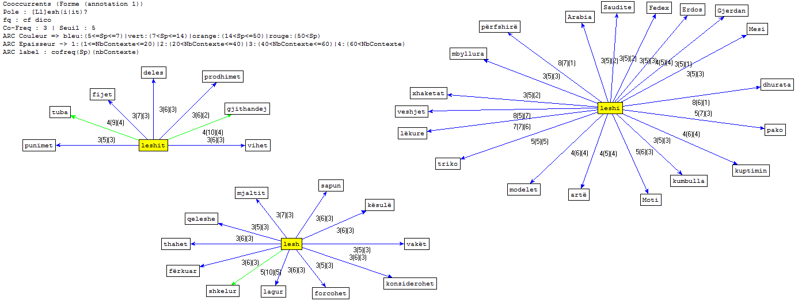

Analyse des résultats en albanais

Pour analyser les fichiers dumps avec Trameur, nous avons pris en compte les différents cas du lexème LESH : "lesh" (*une laine, traduit en français par "de la laine"), "leshi" (la laine) et "leshit" (à partir de laine). L'analyse avec Trameur met en évidence plusieurs thèmes :
le traitement de la laine
mouton, mouillée, frottée, séchée, filée, fils, pelotes
Nous pouvons aisément reconstituer les différentes étapes par lesquelles passe la laine avant d'être commercialisée.
la mode
habits, vestes, bonnet, pull tricoté
Nous remarquons ici les vêtements en laine les plus utilisés. À noter qu'à part le mot "pull tricoté" on ne fait ici pas référence au processus de fabrication de ces vêtements.
l'artisanat
ouvrages, production, art, plis (chapeau traditionnel albanais en laine)
Bien qu'il ne comporte que peu de mots, ce thème est essentiel pour comprendre la relation qu'entretiennent les albanais avec la laine. En effet, on remarque la présence des mots "art", "ouvrage" et "plis", ce qui signifie que le travail de la laine est associé à l'homme et à la notion de création (et non pas à la commercialisation et aux machines). En outre, le mot "production" ne se réfère pas ici à l'économie mais plutôt à "l'action de produire".
les présents
colis, Fedex, miel, prunes, Arabie Saoudite, parure, Mesi, cadeaux
Cette catégorie peut surprendre, pourtant elle nous apporte une information précieuse : la laine et ses produits dérivés sont souvent utilisés en guise de cadeaux. Ainsi, les chaussettes en laine, le miel et les prunes font partie des produits les plus demandés à leur famille par la diaspora albanaise. Notons aussi la présence d'un tapis précieux en laine sur la liste des cadeaux de la Maison Blanche à l'occasion du Nouvel-An en 2012 ainsi qu'un ballon de foot en laine offert par un fan à Lionel Messi.
En conclusion, ces résultats, s'ils renforcent notre hypothèse de départ (la laine est principalement associée à l'artisanat en Albanie), nous font surtout prendre conscience que l'analyse textométrique d'un corpus permet de l'aborder sous un angle différent.
Pour de plus amples informations, vous pouvez consulter la liste des coocurrences et les concordances.
Analyse des résultats en arabe
Notre analyse du trameur se base essentiellement sur le résultat obtenu lors du nettoyage du texte pour l'obtention du graphe final qui contient tous les mots clefs en rapport avec le mot étudié qui est الصوف, l'équivalent de laine en français. Nous constatons d'après notre graphe que les termes tournant autour du mot principal tendent vers divers thèmes. La thématique la plus récurrente est celle de l'habillement. En recherchant nos URLS nous avons essayé d'englober toutes les parties géographiques du monde arabe en partant du Maghreb jusqu'au Moyen-Orient ainsi que les pays du Golfe. Nous apercevons donc que l'utilisation de cette matière est très fréquente dans la fabrication des costumes traditionnels portés chez les arabes.
La deuxième thématique porte sur le travail fait main. Ainsi nous remarquons l'occurrence de 3 mots clé qui sont les suivants (traduits de l'arabe au français) : manuellement, tricotage, filage. Ceci démontre que les arabes sont toujours fidèles aux travaux exercés manuellement sans avoir recours aux machines. Ces pratiques sur la laine ont été accompagnées d'autres comme le nettoyage de la laine à partir du mot lavage et la vente à partir des mots : boutiques, coût, quantité et colorés. Nous avons noté aussi une occurrence qui rappelle l'origine de la laine exprimée à travers le terme les moutons.
Finalement une dernière catégorie à été détectée et qui renvoie aux différents produits fait à base de laine. Nous avons remarqué la présence des termes : produits, les chaussettes, fils. À partir de tous ce éléments nous constatons que le graphe obtenu regroupe presque tous les éléments liés à la laine depuis le moment de sa transformations en produits utilisables par l'être humain sans oublier les différentes étapes par laquelle passe la laine comme étant un produits vierge. Du mouton qui fournit la laine au lavage, au tricotage, coloriage et vente, nous observons le cycle que poursuit ce produit étape par étape.
Pour de plus amples informations, vous pouvez consulter la liste des coocurrences et les concordances.
Analyse des résultats en français
Notre analyse du Trameur s’est basée principalement sur les résultats obtenus lors du nettoyage du fichier dump. Le résultat de cette analyse est présenté sous forme d’un graphe. Ce dernier contient tous les mots clefs en rapport avec "laine". On constate d'après notre graphe que les termes tournant autour du mot "laine" renvoient aux différents animaux qui produisent cette matière et aux mots qui désigne les étapes par laquelle passe la laine ainsi que les adjectifs qui la qualifie. La présence des ces adjectifs mélioratifs renvoie au fait que l’utilisation de cette matière en France est très fréquente dans la fabrication des vêtements luxueux. En guise de conclusion, on constate que le graphe obtenu contient presque tous les éléments liés à la laine depuis son état naturel jusqu’au moment de sa transformation en produits utilisables par l'être humain.
Pour de plus amples informations, vous pouvez consulter la liste des coocurrences et les concordances.
 Français
Français English
English{kind=link}
{kind=link}
{kind=link}